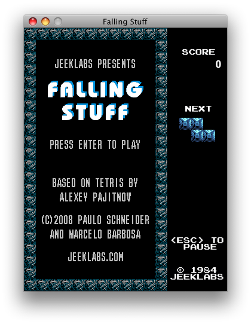
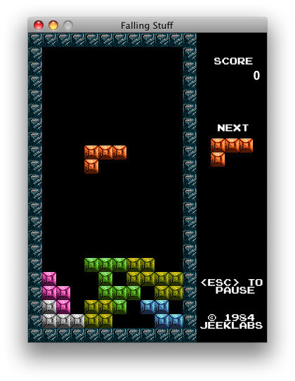

- Who
-
We are a couple of geeks who played way too much videogames and have nothing better to do. One is an artist and the other a programmer, and together we create games that we would like to play.
- Why
-
Because games are fun!
- Games
-
Falling Stuff
Our only fully finished game so far. It is a simple Tetris clone with 8 bits graphics. Not much to say, really. :)

- Contact
-
If you liked/hated our game, or would like to send some random feedback, make it so: contact@jeeklabs.com

We do fun stuff! Or at least try to...